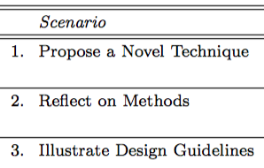

Design Study Contributions Come in Different Guises: Seven Guiding Scenarios

Venue. VIS (2016) Workshop Paper
Authors. Michael Sedlmair
Abstract. Design studies are projects in which visualization researchers seek to design visualization tools that help solving challenging real-world problems faced by domain experts. While design studies have become a vital component of visualization research, reflecting on actionable contributions from them often poses challenges. The goal of this paper is to better characterize different contributions that can result from design study projects. Towards this goal, a set of seven guiding scenarios for characterizing design study contributions is proposed. The scenarios are meant to help authors identify and depict design study contributions that are interesting and actionable for other visualization researchers. They are also meant to provide better guidance in evaluating design study contributions in the reviewing process.